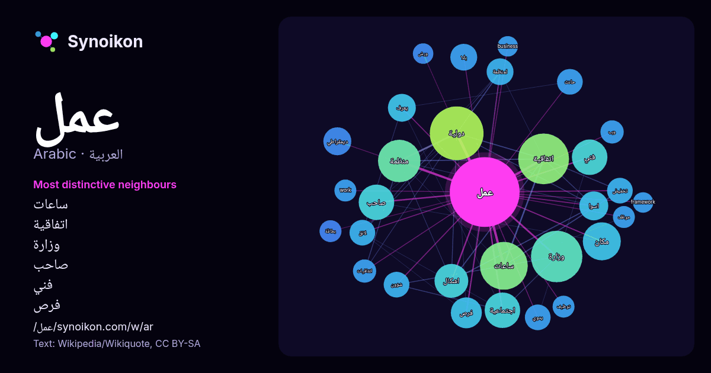

العربية · كلمة شائعة
عمل
“work” · الكلمات الموجودة حولها في 1001 ورودًا من ويكيبيديا, Wikiquote.

الجيران الأكثر تميّزًا
- ساعات 27×
- اتفاقية 26×
- وزارة 19×
- صاحب 15×
- فني 14×
- فرص 14×
- دولية 13×
- اسوا 13×
- لائق 12×
- لمنظمة 11×
- يدوي 11×
- منظمة 11×
- تخفيض 11×
- اشكال 11×
- بلا 10.0×
- مكان 9.6×
- work 8.9×
- حادث 8.7×
- اجتماعية 8.4×
- يعرف 8.3×
× = كم مرة أكثر مما في نصوص ويكيبيديا العامة.
الجيران الأكثر تكرارًا
- دولية 48
- وزارة 44
- اتفاقية 43
- ساعات 38
- حزب 35
- منظمة 30
- مكان 24
- اطفال 22
- اجتماعية 21
- صاحب 21
- فني 21
- حياة 20
- اشكال 19
- قانون 19
- مجموعة 19
- موقع 18
- الله 16
- فرص 16
- اثناء 15
- علم 15
في السياق
- قد يُقصد من «عمل» ما يلي: عمل فيزيائي عمل (تقسيم إداري): تقسيم إداري تاريخي في مصر. عمل (فيلم 1915) عمل (نحو) عمل (اقتصاد): نشاط بشري يمارسه الفرد لإعالة Wikipedia snippets · عمل (توضيح)
- عمل بلقصيري نادي رياضي مغربي من مدينة بلقصيري (120 كيلومترا شمال شرق مدينة الرباط) يمارس في دوري الدرجة الرابعة المغربي. بوابة المغرب بوابة كرة القدم Wikipedia snippets · نادي عمل بلقصيري
- فكرة عمل، (الإنجليزية: Business idea) ، هي مفهوم أو فكرة لمبدأ ما، والذي يمكن استخدامه لأغراض تجارية وربجية. ويتمحور ألمبدأ عادة حول السلعة أو الخدمة Wikipedia snippets · فكرة عمل
- عمل رائع (الإنجليزية: Nice Work) هي رواية للكاتب البريطاني ديفيد لودج، نشرت عام 1988، عن دار نشر سيكر آند واربرغ. https://www.goodreads.com/book/show/69935 Wikipedia snippets · عمل رائع (رواية)
- عمل جيد (الفرنسية: Beau Travail) فيلم فرنسي لعام 1999 من إخراج كلير دينيس، ويستند إلى رواية «بيلي بود» التي كتبها هيرمان ميلفيل (من أبرز الروائيين في Wikipedia snippets · عمل جيد (فلم)
- صاحب العمل بنفسه. مجهول مجهول العنوان اسم مستعار زبيبة والملك Adam Gacek. 2001. The Arabic Manuscript Tradition. p. 106 في كومنز مواد ذات صلة بـ عمل غفل Wikipedia snippets · عمل غفل
- العمل الصناعي هو العمل في مجال الصناعة، وغالبًا يتم فهمه على أنه التصنيع، ولكنه يمكن أن يحتوي على عمال خدمات ذات صلة، مثل عمال التنظيف والطباخين. غالبًا Wikipedia snippets · عمل صناعي
- أسرة طلعت أنه ليس طلعت. "عمل ايه الحب في بابا". Oscar Pictures. مؤرشف من الأصل في 2022-05-05. اطلع عليه بتاريخ 2022-05-05. عمل إيه الحب في بابا على موقع Wikipedia snippets · عمل إيه الحب في بابا (فلم)
كلمات أخرى
- أغنية
- إله
- تاريخ
- جبل
- جرس
- جزيرة
- جسر
- حديقة
- حصان
- حقيقة
- حياة
- خبز
- خريطة
- خريف
- ذهب
- زمن
- ساعة
- شاي
- شتاء
- صحة
- صحراء
- صمت
- صيف
- طبيعة
- طريق
- طعام
- ظل
- عائلة
- عاصفة
- عسل
- علم
- غابة
- فن
- قطار
- قطة
- قلب
- قوة
- كلب
- لغة
- ماء
- مال
- مدينة
- مرآة
- مطر
- ملح
- مناخ
- موت
- نجم
- والدة
حُسبت مسبقًا في 2026-10-09 بالإعدادات الافتراضية (±5 كلمات، مدوّنة متوسطة). يمكن للخريطة التفاعلية تحديثها ببيانات حية.
واجهة مترجمة آليًا؛ نرحب بالتصحيحات.